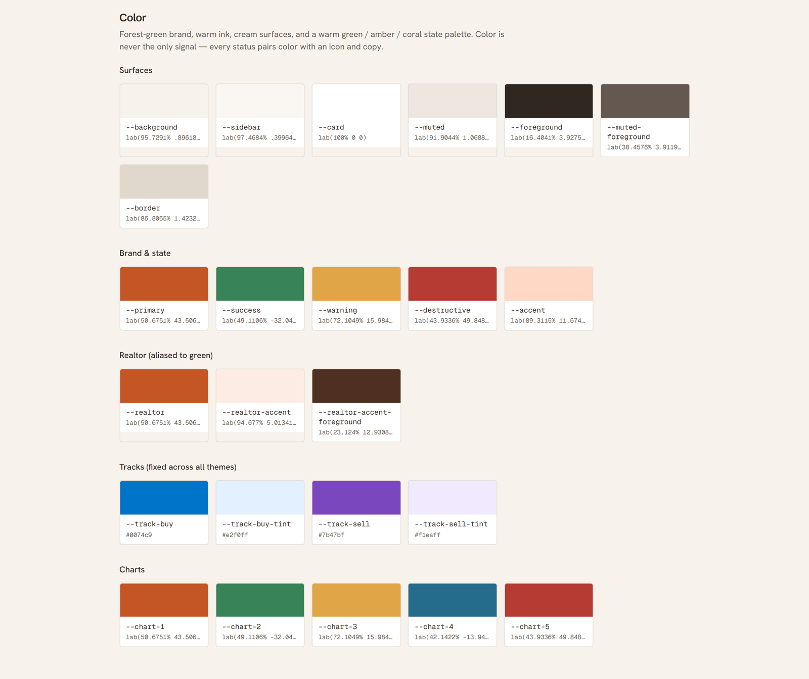
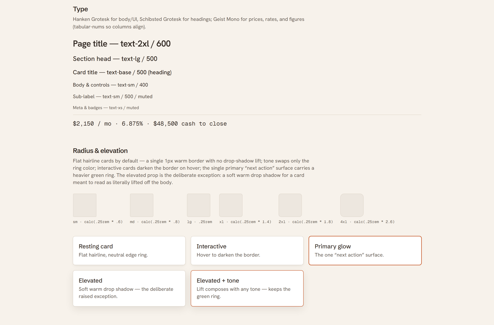
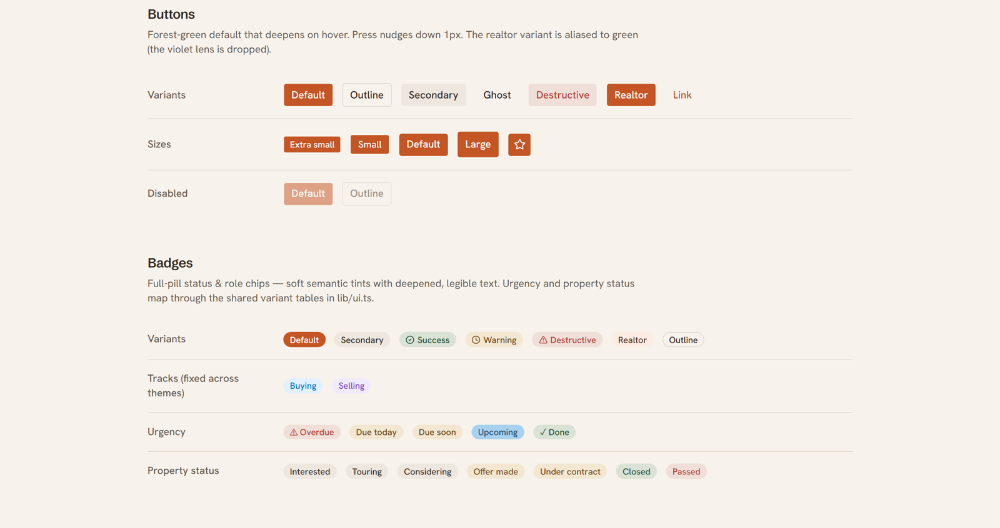
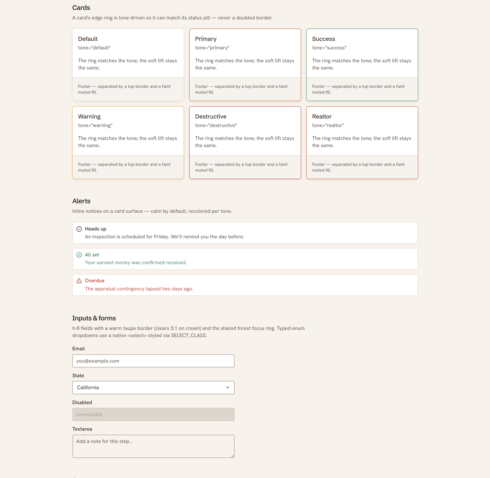
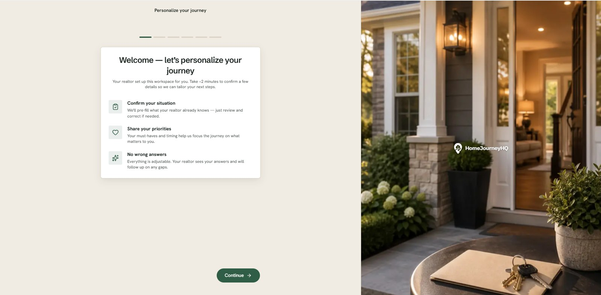
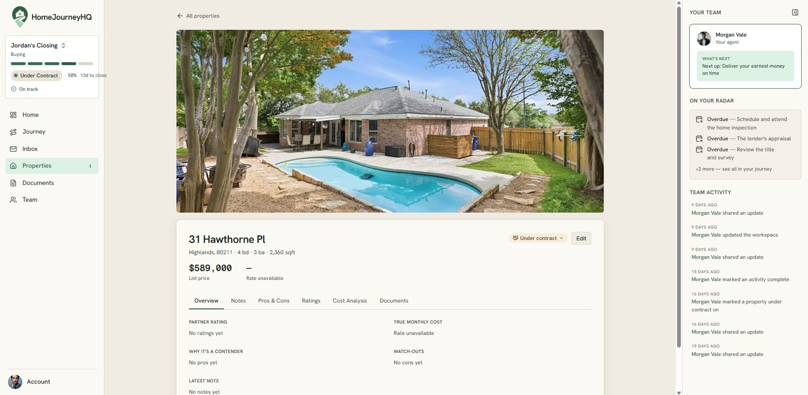
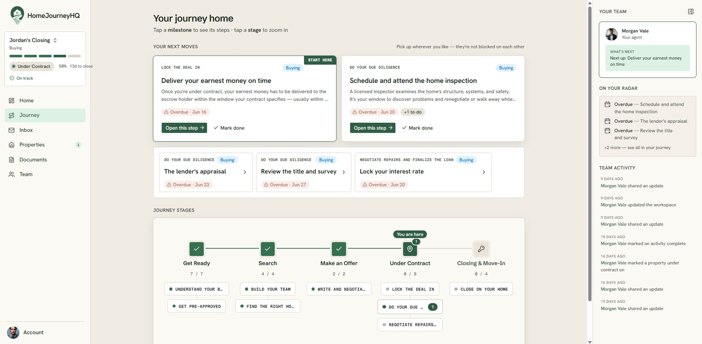
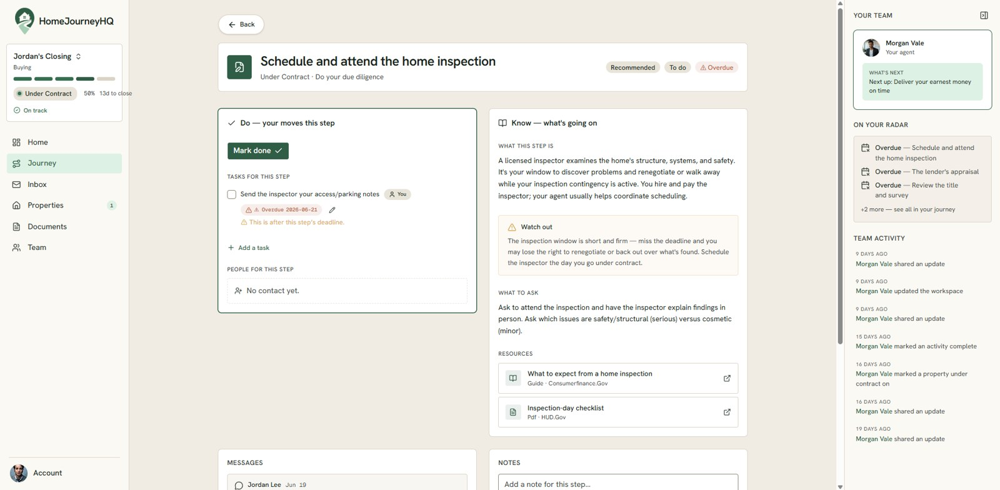

HomeJourneyHQ, A Design System for a Live Build
I joined a home-buying and selling product as the designer, working alongside the engineer building it. Instead of handing over one-off screens, I built a design system: brand foundations, a component library, and interaction patterns that share one vocabulary with the live Next.js codebase. Then I used it to design the product's core surfaces and the journey that is its spine. The point: a design system is what lets a tiny team ship a coherent product and keep it coherent as it grows.
My role: Designer, partnered with a separate developer who owns the build. I own the design system and the product design: the token foundations, the component catalogue, the onboarding, property, and workspace surfaces, and the journey experience at the heart of the product. The system keeps design and engineering speaking the same language as the product evolves.
The foundations
HomeJourneyHQ has to feel calm and trustworthy, the opposite of enterprise software, and that tone is set entirely in the tokens. I built the palette on warm cream surfaces with a soft ink for text, a terracotta primary for actions, and a forest-green family for success and the realtor experience, plus amber and coral for warnings and accents. The buying and selling tracks carry their own fixed blue and purple that hold across every theme, so a buy task always reads blue and a sell task purple. The type system pairs Schibsted Grotesk for headings with Hanken Grotesk for the interface, and Geist Mono for prices and rates so number columns line up. Elevation stays deliberately flat: a card is a single warm hairline ring, the one primary next-action surface gets a heavier green ring, and a real drop shadow is the rare exception for something meant to read as lifted. Every token is authored in OKLCH in a single design source and compiled into the app's CSS, so the system and the codebase cannot drift apart.


The components
On top of the tokens sits the real component set, each piece a direct match to its shadcn/ui counterpart in the build. Buttons run the full range from the terracotta default to the green-aliased realtor variant, with a one-pixel press built in. Badges carry status and role as full pills, urgency from overdue to done, and property status from interested to closed. Cards use a tone-driven edge ring so a card can match its own status pill instead of doubling up borders, and alerts stay calm by default and recolor per tone. Inputs sit on a warm taupe border with the shared forest focus ring. That is what designing in the grain of engineering means: the component library is not a separate artifact the developer has to translate, it is the same parts, named the same way, on both sides of the handoff.


From system to product
Tokens and components only matter if they compose into screens that feel like one product. I designed the core surfaces a buyer moves through. Onboarding is a calm split screen that personalizes the journey from a few plain questions, set against warm photography instead of a wall of form fields. A saved property opens to a full detail view that pairs the listing and its photo with a real cost analysis: the tax, insurance, and payment math the decision actually turns on. Every surface is drawn from the same tokens and components, so the product reads as one calm, considered whole rather than a set of screens drawn by different hands.


The journey
The product's whole reason to exist is the question what comes next, so the journey is the spine everything else hangs from. The journey home keeps the next few moves in front of you at all times and tracks the whole transaction across its stages, from getting ready to closing, so progress is visible at a glance instead of buried in a database. Open any step and it expands to a focused page that splits cleanly into Do, the concrete moves for this step, and Know, a plain-language read on what is happening and what to watch for, with messages and notes kept right alongside. It turns a stressful, opaque process into a calm sequence of next steps, which is the entire promise of the product.


A design system is not a deliverable you hand off and walk away from. It is the shared language that lets a one-designer, one-engineer team move fast and stay coherent.
That is the role I played here: not a set of screens, but the system underneath them. The brand foundations, the component library, and the interaction patterns, kept deliberately in lockstep with the code so the product can keep growing without losing its calm.
The product is live at homejourneyhq.com.